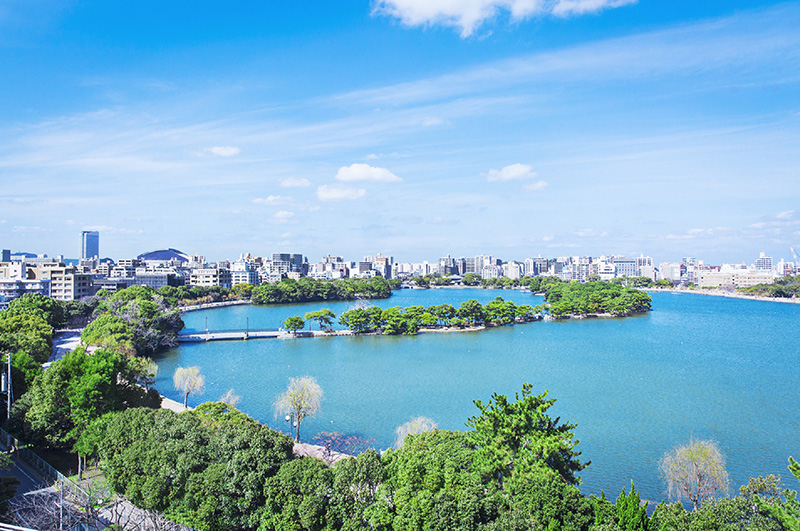
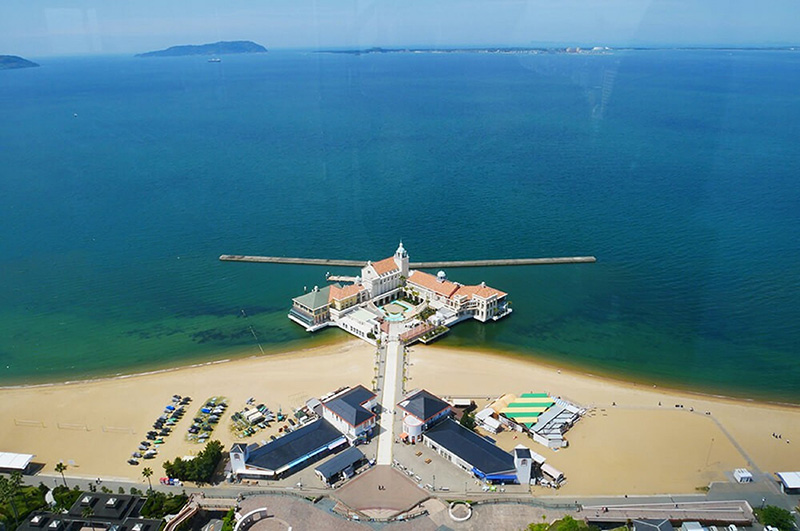
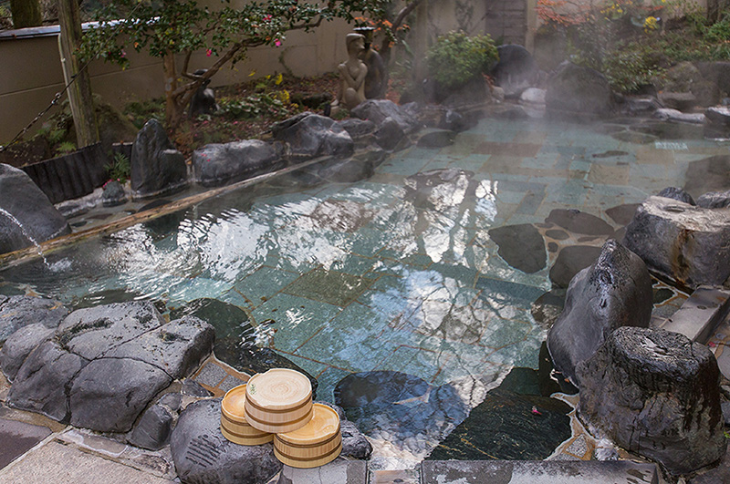
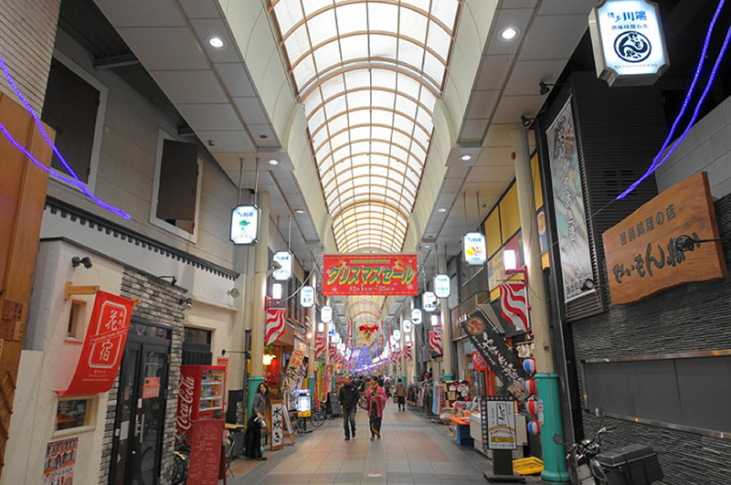
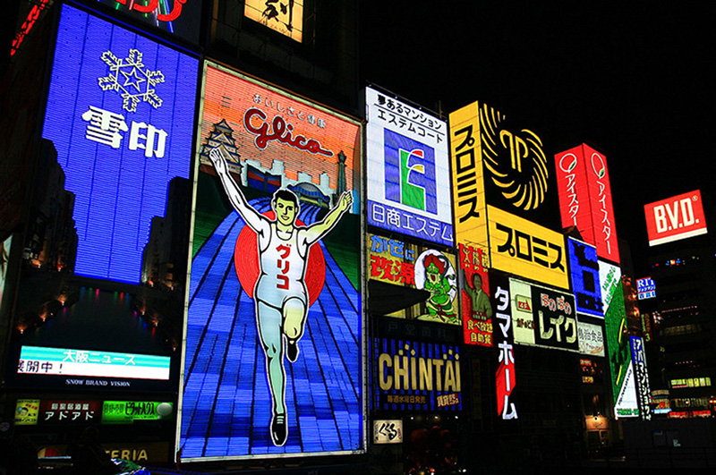

음식별
장소별
-

- 오호리 공원
- 공원 연못에 떠 있는 3개의 섬과 이 섬들을 이어주는 4개의 다리 역사를 느끼면서 자연을 즐길 수 있음.
-

- 모모치 해변 공원
- 근처에 후쿠오카 타워도 있어서 바다보고 사진도 찰칵찰칵 분위기 좋고 한적한 바닷가에서 여유를 즐겨보자
-

- 나미하노유 온천
- 온천에서 푹쉬고 주변 돌아다니면서 구경하자! 들어갈 생각만 해도 노곤노곤~
-

- 카와바타 상점가
- 후쿠오카를 대표하는 전통 재래시장이라함 다양한 먹거리와 생필품 기념품 등등 있다하니 들렸다가 사고싶은거 사고나서 집으로 고고씽 하면 될듯!
-

- 오사카 도톤보리
- 도톤보리 쇼핑몰 상가밀집 지역이기에 돌아다니며 구경 여행 왔으면 기념품 챙겨가야지~